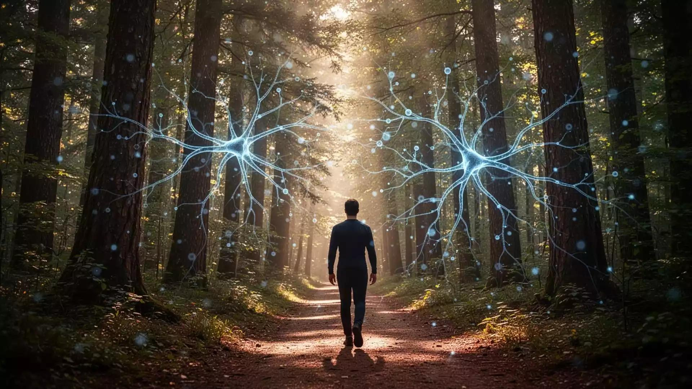

Descoberta 1 de 5
Neuroplasticidade: o cérebro aprende e se transforma
A neuroplasticidade é a capacidade do sistema nervoso de modificar conexões e padrões de funcionamento em resposta à experiência. Aprender envolve prática, feedback, descanso e recuperação ativa da informação. Isso não significa que qualquer habilidade se desenvolva instantaneamente nem que todas as dificuldades desapareçam apenas com esforço.
🎮 Desafio de investigação
Ao estudar algo novo, que estratégia tende a ajudar a aprendizagem duradoura?
Escolha uma alternativa para receber uma explicação.
📚 Estudos e fontes para consultarDunlosky e colaboradores — revisão de técnicas de aprendizagemNational Academies — How People Learn II